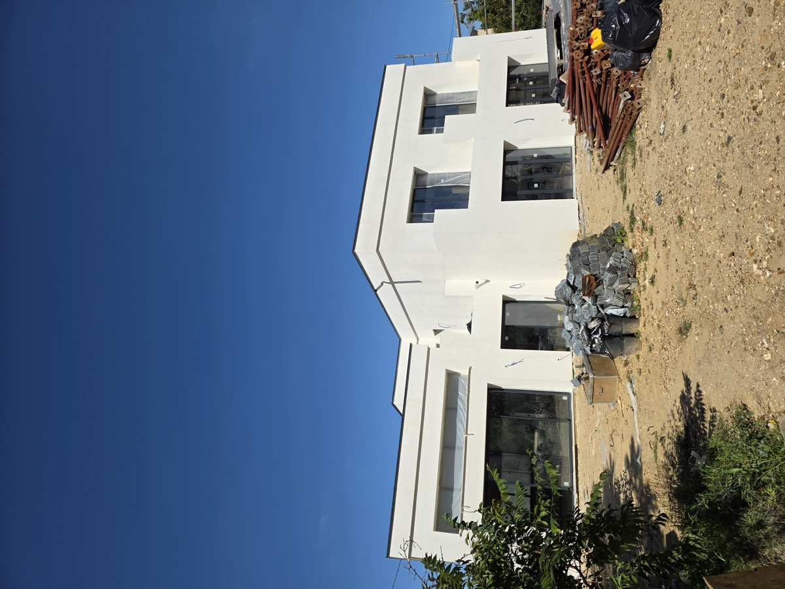

Isla de Francia · entrega 2025
Villa contemporánea · 220 m²
Arquitectura moderna en R+1, zona residencial premium cerca de París. Muros Polistibrick MBK 300, rendimiento Passivhaus certificado, entrega verano 2025.
220 m²habitables
MBK 300U = 0,10
R+12 niveles